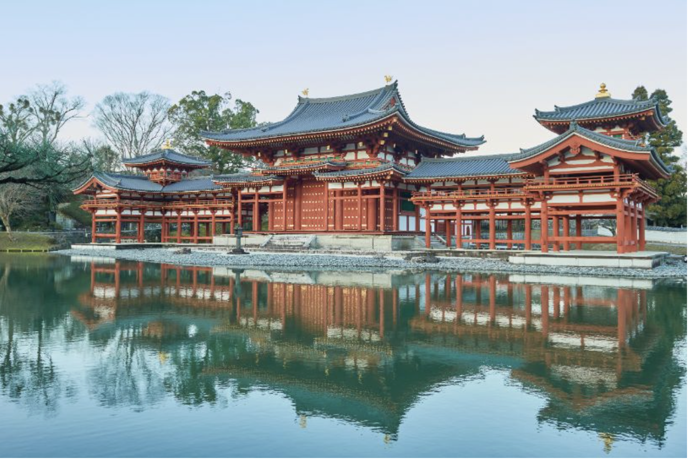

本ポートフォリオでは私の趣味について紹介します。。
継続と自己管理を大切にしています。
小学校1年生から約16年プレーしています。
大学受験の際、日本史を専攻していたこともあり、歴史建造物巡りが好きです。
今年は10円玉で有名な平等院に行きたいと思っています。
温泉が好きで過去には温泉でアルバイトもしていました。
旅先でその地の温泉を巡るのが好きです。
大学浪人時代、眠気解消のため嫌々コーヒーを飲んでいましたが、気づけば好きになっていました。
最近はハンドドリップ道具を揃え、毎朝自分で淹れています。